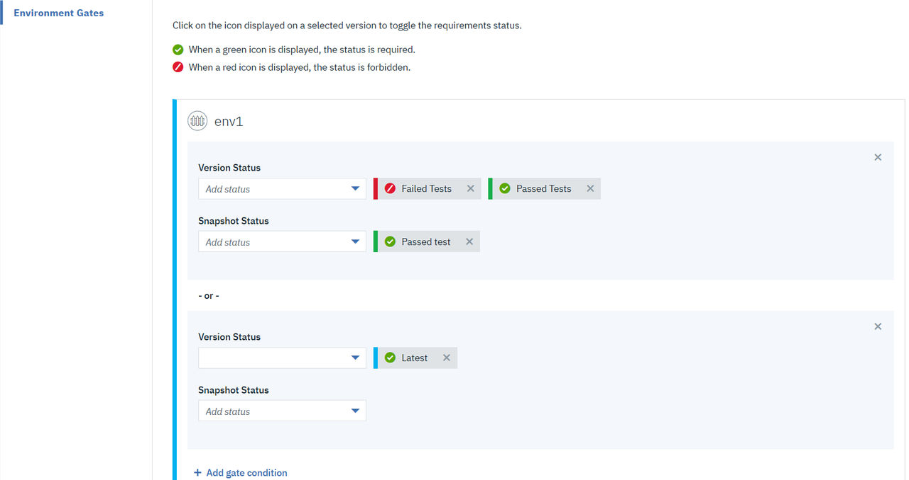

Create gates that specify the conditions that must be met before a component version or
snapshot is deployed to the environment. The conditions are defined on the component version
statuses and snapshot statuses.
Before you begin
Create one or more component version and/or snapshot statuses. To create statuses, see Creating statuses.
Note that component versions cannot be deployed to the environments unless they have the
specified statuses.
Procedure
-
Display the Environment Gates pane for the target application or
application template ( or ).
This pane lists the environments and the gates for each environment.
Note: You cannot modify
environment gates if the environment was created by using an application template.
-
Next to an environment, click Add gate condition.
-
Select a component version and/or snapshot status by clicking the drop-down arrow from their
respective fields.
You can add more than one status to a gate condition that must be satisfied for the deployment.
For example, if you define a gate with the statuses Passed unit tests and
Latest, only component versions with both of these statuses can be deployed into
the environment.
Adding another gate condition, applies the -or- operation to the gate. An
environment with two or more gate conditions means that the component version can be deployed if it
meets any of the conditions. For example, if you define a gate with the statuses Passed unit tests and Latest, a component version passes the gate if it has either
status (or both). A single environment can have any number of gate conditions.
Once you add a status, you can click the green check mark that turns it into a circle-backslash
symbol. It gives the status a Not operation. A status with circle-backslash symbol
indicates that it will exclude the status from deployment. For example. if you define a gate with
the condition (circle-backslash symbol) Failed tests, the component versions with
this status will not be deployed into the environment.
Note: When deploying component versions without choosing a snapshot, the snapshot gates are
ignored.
The following example screen capture shows how you can set the gate conditions for an
environment.

- Repeat these steps for other environments.
Each
environment can have different gates.
-
Save your changes.
Results
The environment deployments are executed when all of the specified gate conditions are
met.